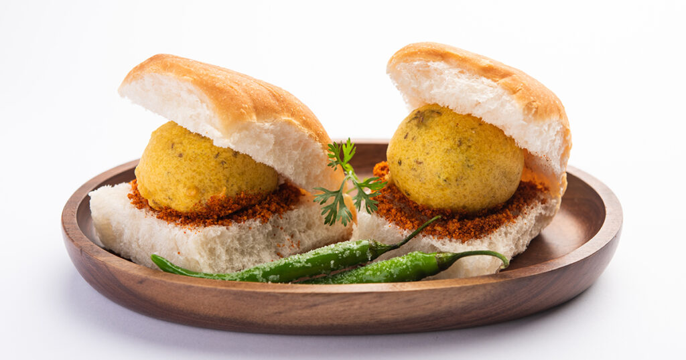

VadaPav - ₹30
Ingredients
- Potatoes
- Green chilies
- Ginger
- Garlic
Recipe
-
Heat oil and temper mustard seeds, curry leaves, hing, green
chilies, ginger, and garlic.
-
Add turmeric, mashed potatoes, salt, coriander, and lemon
juice. Mix well and form small balls.
-
Prepare a thick batter with besan, turmeric, salt, baking
soda, and water.
-
Dip the potato balls in batter and deep-fry until golden
brown.
-
Slice pav buns, spread chutney, and place a hot vada inside.
- Serve with fried green chilies.

Kachori - ₹25
Ingredients
- Kachoris
- Curd (yogurt)
- Tamarind chutney
- Green chutney
Recipe
-
Place 1–2 kachoris on a plate and lightly crush the tops.
- Pour whisked curd generously over the kachoris.
- Drizzle tamarind and green chutneys to taste.
-
Sprinkle chaat masala, red chili powder, cumin powder, and
salt.
-
Garnish with sev, chopped coriander, and pomegranate seeds.
- Serve immediately before they get soggy.
Masala Dhosa - ₹150
Ingredients
- 2 cups rice
- 1/2 cup urad dal (split black gram)
- 1/4 tsp fenugreek seeds
- Salt to taste
- Water (for soaking and grinding)
- Oil or ghee (for roasting)
Recipe
-
Soak rice, urad dal, and fenugreek seeds separately for 4–6
hours.
-
Grind to a smooth batter, mix, and ferment overnight. Add
salt before making dosas.
-
For masala, heat oil and splutter mustard seeds. Add curry
leaves, hing, green chilies, and onions.
-
Add turmeric, mashed potatoes, and salt. Mix well. Add
coriander and lemon juice.
-
Heat a tawa, pour a ladleful of batter, spread thin, and
roast with a little oil.
-
Place potato masala in the center, fold the dosa, and serve
hot with chutney and sambar.